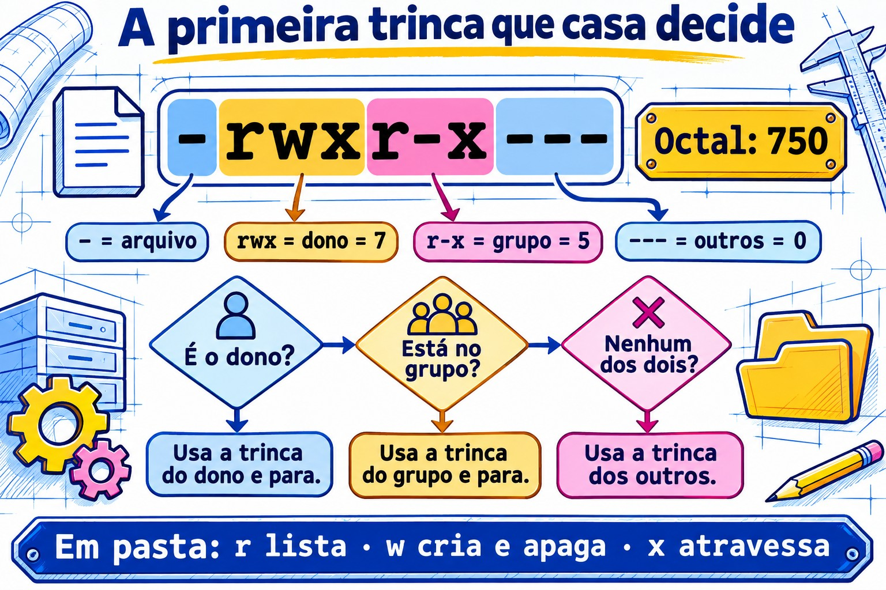
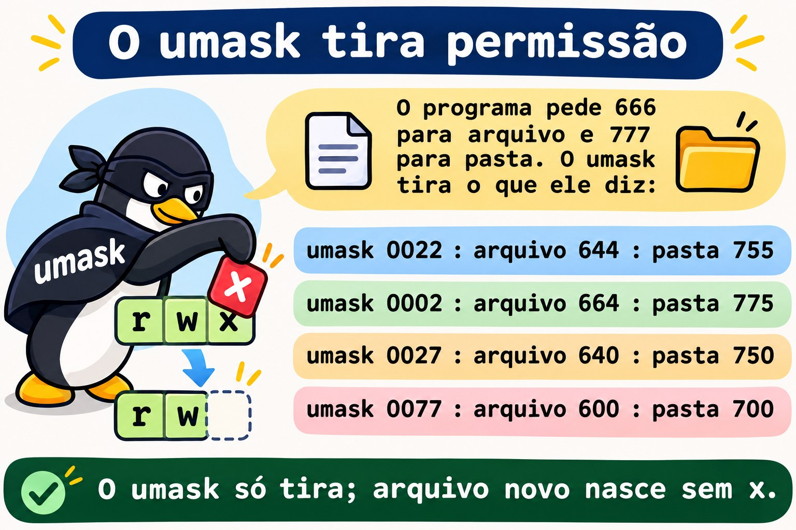
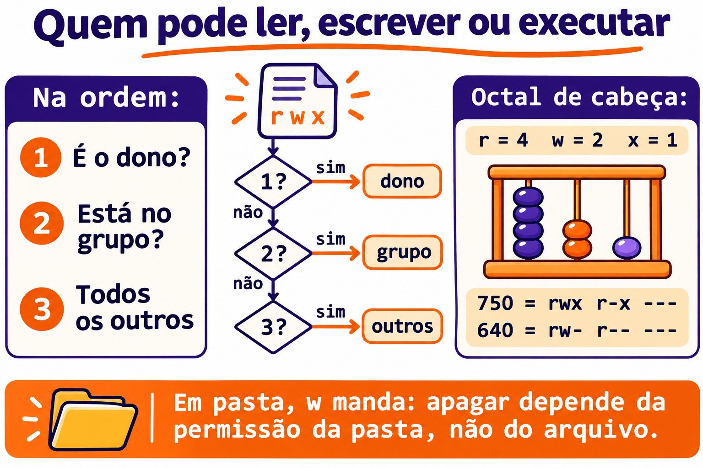
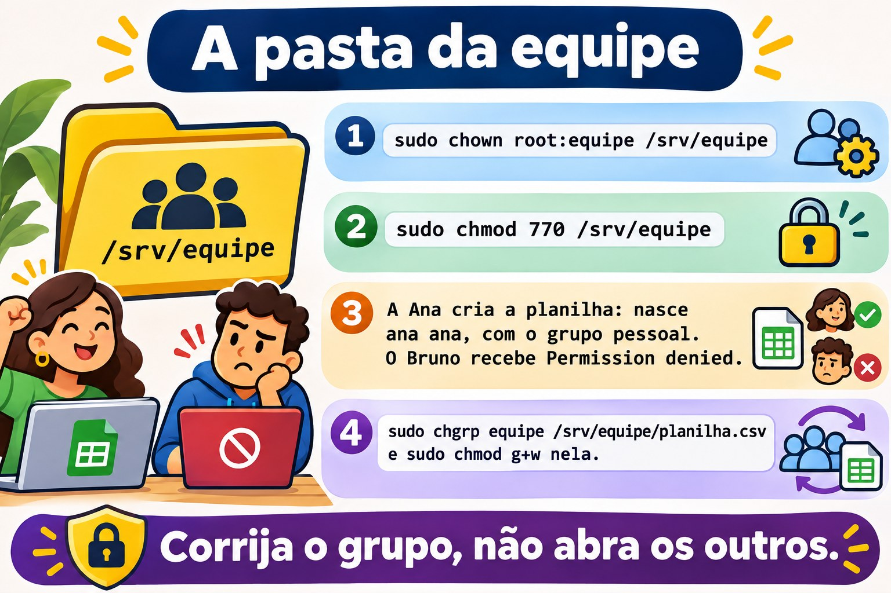
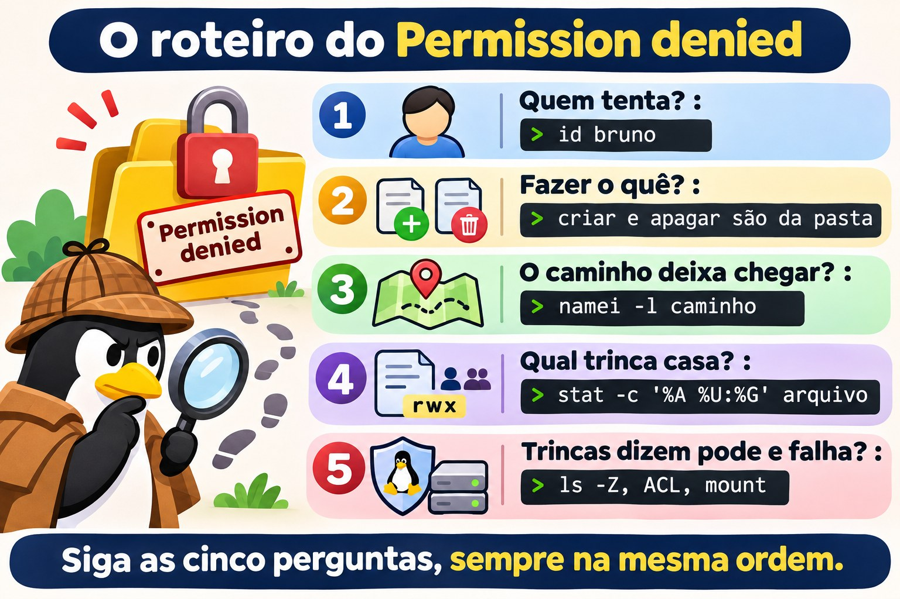

Aula 2.7 · Permissões e dono
Sétima aula do Módulo 2. "Permission denied" é a mensagem de erro mais comum da vida de um sysadmin, e a resposta mais comum a ela é a pior: chmod -R 777. O problema some, e aparecem três: qualquer um apaga tudo, o SSH para de aceitar a chave e a próxima auditoria marca a pasta em vermelho. Hoje você aprende a ler as nove letras de um ls -l como o kernel lê, e a dar a cada pessoa exatamente o acesso que ela precisa. Você usa a Ana, o Bruno e o grupo equipe da Aula 2.6, com os mesmos números nas duas VMs, para testar quem lê, quem escreve e quem apaga, e por quê.
| Ficha | Aula 2.7 |
|---|---|
| Módulo | M2 · Sistema, usuários e permissões, aula 7 de 8 |
| Quando | Semana 5 |
| Ao final você consegue | Ler as permissões de arquivo e de pasta e dizer quem pode o quê; explicar o que r, w e x querem dizer numa pasta; usar chmod em modo simbólico e octal, inclusive em árvores inteiras sem estragar as pastas; trocar dono e grupo com chown e chgrp; prever e ajustar o umask; seguir um roteiro quando aparece "Permission denied" |
| Pré-requisitos | Aula 2.6 (Ana, UID 2001; Bruno, UID 2002; grupo equipe, GID 2000, nas duas VMs; os grupos valem no login); Aula 2.5 (sudo, o apelido deb); Aula 1.8 (permissão de execução num script) |
| Tempo | Cerca de 2h30 |
| Snapshots | m2a7-inicio e m2a7-fim nas duas VMs |
1 · Aquecimento
Três perguntas, de cabeça. Escreva as respostas; o Gabarito confere no fim.
- O arquivo
relatorio.txté-r--r--r-- root roote está numa pastadrwxrwxrwx. Palpite: a Ana, que não é root, consegue apagá-lo? - Você criou
backup.she ele está-rw-r--r--. Palpite:./backup.shfunciona? Ebash backup.sh? - O arquivo
nota.txté----rw---- ana equipe, e a Ana está no grupoequipe. Palpite: a Ana consegue ler o próprio arquivo?
2 · Por que importa
Quase todo chamado de permissão cai num de quatro casos, e cada um tem uma resposta errada que parece funcionar:
| O chamado | A resposta errada | O que ela causa |
|---|---|---|
| "O Bruno não consegue editar a planilha da Ana na pasta da equipe" | chmod -R 777 /srv/equipe | Qualquer conta da máquina, inclusive a do servidor web, lê, altera e apaga tudo |
| "O script de backup diz Permission denied" | chmod 777 backup.sh | Qualquer um pode trocar o conteúdo de um script que o root roda toda noite |
| "Fiz o upload do site e agora dá 403" | chmod -R 644 /var/www/site | As pastas perdem o x e ninguém entra nelas, nem o servidor web |
| "O SSH parou de aceitar a minha chave" | Gerar outra chave | O problema era uma pasta com escrita para o grupo; o sshd recusa a chave de propósito |
Nos quatro casos, quem resolve de verdade faz a mesma coisa: pergunta quem está tentando, o que está tentando fazer e onde, e lê as permissões do caminho inteiro. É isso que você treina hoje.
3 · Modelo mental
Cada arquivo tem um dono, um grupo e três trincas de permissão. O kernel pergunta "quem é você?" e usa uma trinca só: a do dono, se você for o dono; senão a do grupo, se você estiver no grupo; senão a dos outros. A primeira que casa decide, e as outras nem são olhadas.
-rwxr-x---. 1 ana equipe 2048 nov 3 09:12 fechamento.sh
│└┬┘└┬┘└┬┘│ │ │
│ │ │ │ │ │ └─ grupo do arquivo
│ │ │ │ │ └────── dono do arquivo
│ │ │ │ └─ "." = tem contexto SELinux (Rocky); "+" = tem ACL (Aula 8.5)
│ │ │ └─── outros: quem não é o dono nem está no grupo --- = 0
│ │ └────── grupo: quem está no grupo equipe r-x = 5
│ └───────── dono: a ana rwx = 7
└─────────── tipo: - arquivo, d pasta, l link
octal: 750
Quem está pedindo?
é o dono? ── sim ──▶ usa rwx (e para aqui)
│ não
está no grupo? ── sim ──▶ usa r-x (e para aqui)
│ não
usa ---As mesmas letras querem dizer coisas diferentes num arquivo e numa pasta. Essa tabela resolve metade dos chamados:
| Letra | Num arquivo | Numa pasta |
|---|---|---|
r (4) | Ler o conteúdo | Listar os nomes que estão dentro |
w (2) | Alterar o conteúdo | Criar, apagar e renomear o que está dentro, qualquer que seja a permissão do arquivo |
x (1) | Executar como programa | Entrar na pasta e passar por ela para chegar a algo lá dentro |
Quatro ideias carregam a aula:
| Ideia | O que quer dizer | Consequência |
|---|---|---|
| Uma trinca só | Dono, senão grupo, senão outros. Não soma | Um dono com menos permissão que o grupo fica com a do dono |
| Apagar é assunto da pasta | Apagar um arquivo muda a pasta, não o arquivo | Um arquivo r--r--r-- numa pasta com w pode ser apagado |
| O caminho inteiro conta | Para chegar a /srv/a/b/c.txt, você precisa de x em /, /srv, /srv/a e /srv/a/b | Um arquivo rw-rw-rw- dentro de uma pasta sem x é inalcançável |
| O nascimento decide | Todo arquivo novo nasce com o grupo principal de quem criou e com o umask de quem criou | A maioria dos problemas de pasta compartilhada é o grupo ou o umask errado no momento da criação |


4 · Conceito em camadas
Essencial
Ler. O ls -l mostra as letras; o stat mostra também o número, que é o que você vai digitar no chmod.
ls -l /etc/passwd /etc/shadow
ls -ld /tmp /home/rodrigo
stat -c '%A %a %U:%G %n' /etc/passwd /etc/shadow /tmp-rw-r--r--. 1 root root 1532 nov 3 08:10 /etc/passwd
----------. 1 root root 987 nov 3 08:10 /etc/shadow
-rw-r--r-- 644 root:root /etc/passwd
---------- 0 root:root /etc/shadow
drwxrwxrwt 1777 root:root /tmpO -d do ls -ld mostra a pasta em si, em vez do que está dentro dela. O /etc/shadow com 0 não é um erro: ninguém tem permissão, e só o root, que passa por cima das permissões de leitura e escrita, consegue ler. O t no fim do /tmp e o 1 na frente do 1777 são o sticky bit, assunto da Aula 2.8. O exemplo é da rocky-lab; na debian-lab o ls -l vem sem o . depois das permissões, e o /etc/shadow aparece como -rw-r----- root shadow.
O número. Cada trinca vira um dígito somando r=4, w=2, x=1:
| Letras | Conta | Dígito | Uso típico |
|---|---|---|---|
rwx | 4+2+1 | 7 | Dono de pasta ou de script |
rw- | 4+2 | 6 | Dono de arquivo comum |
r-x | 4+1 | 5 | Grupo de pasta ou de script |
r-- | 4 | 4 | Só leitura |
--- | 0 | 0 | Nada |
Os números que você vai digitar quase sempre: 644 e 755 (padrão de arquivo e de pasta públicos), 640 e 750 (só o grupo lê), 600 e 700 (só o dono), 660 e 770 (o grupo trabalha junto).
Mudar permissões: chmod. Dois jeitos de dizer a mesma coisa:
chmod 750 fechamento.sh # octal: define as três trincas de uma vez
chmod u=rwx,g=rx,o= fechamento.sh # simbólico: o mesmo resultado
chmod u+x backup.sh # simbólico relativo: acrescenta x ao dono, mexe em nada mais
chmod g-w,o-r planilha.csv # tira w do grupo e r dos outros
chmod a+r leiame.txt # a = all, as três trincas| Parte | Quer dizer |
|---|---|
u, g, o, a | Dono (user), grupo, outros, todos |
+, -, = | Acrescenta, tira, define exatamente (o que não estiver escrito vira -) |
r, w, x | As permissões |
O octal é bom para definir o estado inteiro. O simbólico relativo é bom para mudar uma coisa sem saber ou sem mexer no resto. Só o dono do arquivo e o root podem rodar chmod nele.
Mudar dono e grupo: chown e chgrp.
sudo chown ana planilha.csv # muda o dono
sudo chown ana:equipe planilha.csv # dono e grupo
sudo chown :equipe planilha.csv # só o grupo
chgrp equipe planilha.csv # só o grupo, sem sudo, se você for o dono e estiver no grupo
sudo chown -R ana:equipe /srv/projeto # a árvore inteiraSó o root muda o dono de um arquivo. Um usuário comum pode mudar o grupo de um arquivo seu, mas só para um grupo de que ele faz parte.
Intermediário
O umask. Programas que criam arquivos pedem, em geral, 666 para arquivos e 777 para pastas. O umask é a lista do que tirar desse pedido:
umask | Arquivo novo | Pasta nova | Onde costuma aparecer |
|---|---|---|---|
0022 | 644 rw-r--r-- | 755 rwxr-xr-x | O root; usuários comuns no Debian |
0002 | 664 rw-rw-r-- | 775 rwxrwxr-x | Usuários comuns no Rocky, que têm um grupo pessoal só deles |
0027 | 640 rw-r----- | 750 rwxr-x--- | Servidores endurecidos, scripts que geram dados internos |
0077 | 600 rw------- | 700 rwx------ | Scripts que geram chaves, senhas, dumps de banco |
umask # 0022, por exemplo
umask -S # u=rwx,g=rx,o=rx: o que SOBRA, em letras
umask 027 # só para este shell e o que ele abrirO umask nunca acrescenta permissão. Um arquivo novo não nasce com x, qualquer que seja o umask, porque o programa pediu 666: é por isso que todo script novo precisa de chmod u+x. O umask vale para o processo e para tudo o que ele abrir; o padrão de cada login vem do /etc/login.defs e dos arquivos de inicialização do shell, e o seu ~/.bashrc pode mudá-lo para você.
Testar como outra pessoa. Em vez de pedir à Ana para tentar de novo, pergunte ao kernel:
sudo -u ana cat /srv/equipe/planilha.csv
sudo -u ana test -w /srv/equipe/planilha.csv && echo "a Ana pode escrever"
namei -l /srv/equipe/planilha.csvO sudo -u ana roda o comando como a Ana, com os grupos dela, sem pedir a senha dela. O namei -l mostra dono, grupo e permissões de cada pasta do caminho, de / até o arquivo. É a ferramenta número um quando o arquivo parece certo e o acesso falha mesmo assim.
Outras ferramentas que poupam erro:
install -m 640 -o ana -g equipe modelo.csv /srv/equipe/ # copia já com modo, dono e grupo
install -d -m 770 -o root -g equipe /srv/equipe # cria pasta já com modo, dono e grupo
cp -p origem destino # copia mantendo modo, dono (se for root) e datas
chmod --reference=modelo.csv novo.csv # copia as permissões de outro arquivoO cp sem -p cria o arquivo novo como seu, com o seu umask: é por isso que um arquivo copiado de outro servidor "perde" as permissões.


Ponte Windows
| No Windows | No Linux | A diferença que pega |
|---|---|---|
| Aba Segurança, lista de usuários e grupos | Três trincas: dono, um grupo, outros | No Linux padrão, um arquivo tem um grupo. Para mais, há as ACLs (Aula 8.5) |
| Permissões somam, e Negar vence | Usa a primeira trinca que casa, sem somar | O dono com menos permissão que o grupo fica com a do dono |
| "Todos: Controle total" | 777 | O mesmo erro, com o mesmo resultado |
| "Tomar posse" (take ownership) | sudo chown | No Linux, só o root muda o dono |
| Herança de permissões da pasta-mãe | Não existe; o umask e o grupo de quem cria decidem | Um arquivo novo não herda as permissões da pasta. O grupo pode ser herdado com o setgid (Aula 2.8) |
| Excluir é uma permissão do arquivo | Apagar é a permissão w da pasta | Um arquivo só leitura pode ser apagado por quem escreve na pasta |
Avançado
O root e o x. O root passa por cima de r e w em qualquer arquivo, e de r e x em qualquer pasta. Mas, para executar um arquivo, mesmo o root precisa que pelo menos uma das três trincas tenha x. Por isso sudo ./backup.sh falha num script 644.
A permissão é conferida na abertura. O kernel confere as permissões quando o processo abre o arquivo. Um processo que já estava com o arquivo aberto continua lendo e escrevendo depois de um chmod 000. Na vida real: tirar a permissão de um log não para o serviço que já está gravando nele.
Sem r numa pasta, com x. Uma pasta 711 (rwx--x--x) deixa os outros entrarem e abrirem um arquivo cujo nome já sabem, mas não deixa listar. É assim que servidores antigos deixavam ~/public_html acessível ao servidor web sem expor a lista de arquivos da pasta pessoal.
Os indicadores depois das letras. Um . depois das permissões quer dizer que o arquivo tem um contexto SELinux, o normal na Rocky. Um + quer dizer que há uma ACL, permissões extras além das três trincas, que o ls -l não mostra; getfacl arquivo mostra. Se as três trincas dizem que pode e o acesso falha, a causa está numa dessas duas camadas: Aula 8.5 para ACL, Aula 12.3 para SELinux.
O quarto dígito. O stat às vezes mostra quatro dígitos, como o 1777 do /tmp. O primeiro é o das permissões especiais: setuid (4), setgid (2) e sticky (1). É a Aula 2.8.
5 · Rocky × Debian
| O quê | Rocky 9 | Debian 13 |
|---|---|---|
umask de um usuário comum | Em geral 0002 (cada um tem grupo pessoal, então o grupo pode ganhar w) | Em geral 0022 |
umask do root | 0022 | 0022 |
Modo da pasta pessoal criada pelo useradd -m | 700 (HOME_MODE 0700 no login.defs) | Depende do login.defs da versão: 700 ou 755. Confira com ls -ld /home/* |
Indicador depois das permissões no ls -l | . (contexto SELinux) | Nada, ou + quando há ACL |
/etc/shadow | 0 (----------), dono root:root | 640 (-rw-r-----), grupo shadow |
Grupo de quem usa sudo | wheel | sudo |
namei, stat, install | No pacote base (util-linux, coreutils) | Igual |
| Quando as trincas dizem "pode" e o acesso falha | Suspeite do SELinux (ls -Z, Aula 12.3) | Suspeite da ACL ou do AppArmor, que trabalha por programa e não por arquivo |
6 · Lab guiado
Neste lab você é o rodrigo, com sudo, e testa tudo como a Ana e como o Bruno com sudo -u. Ninguém precisa digitar senha de ninguém: o kernel responde por eles, com os grupos que eles têm de verdade. Os experimentos ficam em /srv/lab27, que você pode bagunçar à vontade. A pasta /srv/equipe, criada no Passo 5, fica para a Aula 2.8, que termina o desafio do módulo em cima dela.


Passo 0 · Snapshot e o caminho até a debian-lab
No Proxmox, tire o snapshot m2a7-inicio das duas VMs. Na rocky-lab, confira o caminho até a debian-lab e as contas da Aula 2.6:
eval "$(ssh-agent -s)"; ssh-add
ssh -o BatchMode=yes deb 'hostname; id -un'
id ana; id bruno
ssh deb 'id ana; id bruno'As quatro linhas de id têm que mostrar uid=2001(ana) e uid=2002(bruno), os dois com 2000(equipe) na lista de grupos, nas duas VMs. Se faltar o equipe em algum, volte ao Passo 4 da Aula 2.6: o lab inteiro depende disso.
Passo 1 · Ler como o kernel lê
Nas duas VMs (na debian-lab, prefixe com ssh deb):
stat -c '%A %a %U:%G %n' /etc/passwd /etc/shadow /etc/sudoers /tmp /home/*Para cada linha, responda em voz alta três perguntas: quem é o dono, qual é o grupo e o que a Ana, que não é nenhum dos dois, consegue fazer. Exemplo de resposta para /home/bruno com drwx------ 700 bruno:bruno: "o dono é o Bruno; a Ana não é o Bruno nem está no grupo bruno, então cai em outros, ---; ela não entra, não lista, não lê nada lá dentro".
Agora confirme pelo kernel, em vez de confiar na sua leitura:
sudo -u ana ls /home/bruno
sudo -u ana cat /etc/shadow
sudo -u ana cat /etc/passwd | tail -2As duas primeiras dão Permission denied; a terceira funciona. Anote as diferenças entre as VMs: o /etc/shadow (0 no Rocky, 640 root:shadow no Debian) e o modo das pastas pessoais.
Passo 2 · r, w e x numa pasta, um de cada vez
Monte o banco de testes na rocky-lab:
sudo mkdir -p /srv/lab27/caixa
echo "conteúdo da nota" | sudo tee /srv/lab27/caixa/nota.txt >/dev/null
sudo chmod 755 /srv/lab27
sudo chmod 644 /srv/lab27/caixa/nota.txtPara cada modo da tabela, rode o chmod e os dois testes como a Ana, e compare com a coluna "Esperado":
sudo chmod 755 /srv/lab27/caixa # troque pelo modo da linha
sudo -u ana ls -l /srv/lab27/caixa
sudo -u ana cat /srv/lab27/caixa/nota.txt| Modo da pasta | Trinca dos outros | ls -l como a Ana | cat nota.txt como a Ana | Esperado |
|---|---|---|---|---|
755 | r-x | Lista normal | Funciona | Entra e lista |
754 | r-- | Os nomes aparecem, mas com ????????? e erros de cannot access | Permission denied | Lista os nomes, não entra |
751 | --x | cannot open directory | Funciona | Entra sem listar: quem sabe o nome, abre |
750 | --- | Permission denied | Permission denied | Nada |
A linha 754 é a mais estranha e a mais importante: r sem x dá só a lista de nomes, porque ler os detalhes de um arquivo (dono, tamanho, modo) exige entrar na pasta. Quando você vir ????????? num ls -l, a pasta tem r e falta x. Volte a pasta para 755 no fim.
Passo 3 · Apagar é assunto da pasta
sudo mkdir /srv/lab27/aberta
sudo chmod 777 /srv/lab27/aberta
echo "relatório final" | sudo tee /srv/lab27/aberta/relatorio.txt >/dev/null
sudo chmod 444 /srv/lab27/aberta/relatorio.txt
stat -c '%A %U:%G %n' /srv/lab27/aberta /srv/lab27/aberta/relatorio.txt
sudo -u ana sh -c 'echo "editado" > /srv/lab27/aberta/relatorio.txt'
sudo -u ana rm -f /srv/lab27/aberta/relatorio.txt
ls -l /srv/lab27/abertaA Ana não consegue editar o arquivo (Permission denied: o arquivo é r-- para ela), mas consegue apagá-lo, e o ls volta vazio. Sem o -f, o rm teria perguntado remove write-protected regular file?, e um "y" bastaria. O arquivo é do root e só leitura para todos, e não fez diferença: apagar é escrever na pasta, e a pasta é 777.
Decida 1 · Proteger o relatório. Você recria o relatorio.txt e quer que a Ana continue lendo o que está na pasta aberta, mas não consiga mais apagar nada lá. O que você muda?
- A)
sudo chmod 400 /srv/lab27/aberta/relatorio.txt - B)
sudo chmod 755 /srv/lab27/aberta - C)
sudo chown root:root /srv/lab27/aberta/relatorio.txt - D)
sudo chmod 1777 /srv/lab27/aberta
Escolha a letra antes de olhar a tabela.
| Se você marcou | Resultado | Por quê |
|---|---|---|
| A | ❌ Errada | Você mexeu no arquivo, e apagar depende da pasta. A Ana continua com w na pasta e apaga do mesmo jeito. E agora ela nem lê mais o relatório. |
| B | ✅ Certa | A pasta fica rwxr-xr-x: a Ana cai em outros, r-x, então lista e entra, mas não cria, não renomeia e não apaga. Era o pedido. |
| C | ❌ Errada | O arquivo já era do root. O dono do arquivo não importa para apagar; importa quem escreve na pasta. |
| D | ⚠️ Funciona, mas | O sticky bit (o 1 na frente) faz cada um só apagar o que é seu, e a Ana deixa de apagar o relatório do root. Mas ela continua podendo criar arquivos na pasta, o que não foi pedido. É a ferramenta certa para pastas onde todo mundo escreve, como o /tmp: Aula 2.8. |
Para fixar: "quem pode apagar?" se responde olhando a pasta, nunca o arquivo.
Aplique a B, recrie o relatório e confirme que o sudo -u ana rm -f agora dá Permission denied.
Passo 4 · chmod nos dois idiomas
No seu ~, como rodrigo:
printf '#!/bin/bash\necho "backup ok em $(hostname)"\n' > ~/backup.sh
stat -c '%A %a %n' ~/backup.sh
~/backup.sh
bash ~/backup.shO arquivo nasce sem x (644 ou 664, conforme o seu umask), e por isso o ~/backup.sh dá Permission denied. O bash ~/backup.sh funciona porque quem executa é o bash, que só precisa ler o script. Agora, um comando de cada vez, prevendo o resultado antes de rodar o stat:
chmod u+x ~/backup.sh; stat -c '%A %a' ~/backup.sh
chmod 750 ~/backup.sh; stat -c '%A %a' ~/backup.sh
chmod g-x,o+r ~/backup.sh; stat -c '%A %a' ~/backup.sh
chmod u=rw,go= ~/backup.sh; stat -c '%A %a' ~/backup.sh
chmod a+x ~/backup.sh; stat -c '%A %a' ~/backup.shAs respostas, para conferir depois: rwx no dono e o resto como estava (744 ou 764); rwxr-x--- 750; rwxr--r-- 744; rw------- 600; rwx--x--x 711.
Por último, prove que o root também precisa de x para executar:
chmod 600 ~/backup.sh
sudo ~/backup.sh
chmod 700 ~/backup.sh && sudo ~/backup.shO primeiro sudo falha (conforme a versão do sudo, a mensagem é command not found ou Permission denied); o segundo funciona.
Passo 5 · Dono, grupo e a pasta da equipe
A equipe quer uma pasta onde a Ana e o Bruno trabalhem juntos e ninguém mais entre. Na rocky-lab:
sudo mkdir /srv/equipe
sudo chown root:equipe /srv/equipe
sudo chmod 770 /srv/equipe
ls -ld /srv/equipe
ls /srv/equipeO ls -ld mostra drwxrwx--- root equipe, e o seu ls /srv/equipe dá Permission denied: o rodrigo não está no equipe, então cai em outros, ---. Para olhar lá dentro, você vai usar sudo a partir de agora. Agora a Ana cria a planilha, e o Bruno tenta acrescentar uma linha:
sudo -u ana sh -c 'echo "jan;100" > /srv/equipe/planilha.csv'
sudo ls -l /srv/equipe
sudo -u bruno sh -c 'echo "fev;200" >> /srv/equipe/planilha.csv'O Bruno recebe Permission denied. O ls -l conta por quê: o arquivo nasceu ana ana, com o grupo pessoal da Ana, não com o equipe. O Bruno não é a Ana nem está no grupo ana, então cai em outros, r--. A pasta estava certa; o arquivo nasceu com o grupo errado, porque arquivo novo pega o grupo principal de quem criou.
Decida 2 · O Bruno não consegue editar a planilha da Ana. O chamado chegou. O que você faz?
- A)
sudo chmod -R 777 /srv/equipe - B)
sudo chgrp equipe /srv/equipe/planilha.csv && sudo chmod g+w /srv/equipe/planilha.csv - C)
sudo chown bruno /srv/equipe/planilha.csv - D)
sudo usermod -aG ana bruno
Escolha a letra antes de olhar a tabela.
| Se você marcou | Resultado | Por quê |
|---|---|---|
| A | ❌ Errada | Resolve o Bruno e abre a pasta para todas as contas da máquina, inclusive serviços. E não resolve nada para o próximo arquivo: ele nasce com o grupo errado de novo. |
| B | ✅ Certa | O arquivo passa a ser do grupo equipe e o grupo ganha w. O Bruno, que está no equipe, cai na trinca do grupo, rw-. A Ana poderia ter feito o mesmo sem sudo, porque é a dona e está no equipe. |
| C | ❌ Errada | Agora o Bruno edita e a Ana, que criou a planilha, cai na trinca dos outros. Você só trocou quem reclama. |
| D | ⚠️ Funciona, mas | O Bruno entra no grupo pessoal da Ana e passa a ter acesso a tudo o que ela criar com o grupo ana, em qualquer lugar da máquina, inclusive fora da pasta da equipe. Grupos pessoais existem justamente para não serem compartilhados. |
Para fixar: em pasta compartilhada, o arquivo tem que ser do grupo da equipe e ter w no grupo. Corrija o grupo, não abra os outros.
Aplique a B e confirme:
sudo -u bruno sh -c 'echo "fev;200" >> /srv/equipe/planilha.csv'
sudo cat /srv/equipe/planilha.csv
sudo -u bruno sh -c 'echo "rascunho" > /srv/equipe/notas-bruno.txt'
sudo ls -l /srv/equipeFuncionou para a planilha, e o problema voltou no arquivo novo do Bruno: notas-bruno.txt nasceu bruno bruno. Corrigir arquivo por arquivo não escala. A solução definitiva é o bit setgid na pasta, que faz todo arquivo novo herdar o grupo equipe: é a primeira coisa da Aula 2.8. Por enquanto, deixe assim.


Passo 6 · O umask que você tem, e o que você quer
Meça o umask de cada um, nas duas VMs, com um login completo (o su - passa pelos mesmos arquivos de inicialização de um login de verdade):
umask
sudo su - ana -c umask
sudo su - root -c umask
ssh deb umask
ssh -t deb 'sudo su - ana -c umask'Anote os cinco valores. A seção 5 diz o que costuma aparecer, mas o que vale é o que a sua VM respondeu: as duas distribuições decidem o umask de usuários com grupo pessoal por caminhos diferentes, e isso já mudou entre versões. Agora veja o efeito:
mkdir ~/umask-teste && cd ~/umask-teste
touch padrao; mkdir dpadrao
( umask 027; touch a027; mkdir d027 )
( umask 077; touch a077; mkdir d077 )
stat -c '%a %A %n' *
cd ~Os parênteses rodam cada umask num subshell, e o seu shell volta ao normal na linha seguinte. Esperado: a027 640, d027 750, a077 600, d077 700; padrao e dpadrao seguem o umask que você anotou.
Decida 3 · O dump com senhas. Um script do root, rodado pelo cron, faz o dump do banco em /backup/banco.sql. O arquivo tem senhas de usuários da aplicação. Hoje ele nasce 644. Qual é a correção certa?
- A) Um
chmod 600 /backup/banco.sqllogo depois do dump, no fim do script - B) Um
umask 077na primeira linha do script, antes do dump - C)
sudo chmod 777 /backup, para o arquivo herdar as permissões da pasta - D) Um
umask 777na primeira linha do script
Escolha a letra antes de olhar a tabela.
| Se você marcou | Resultado | Por quê |
|---|---|---|
| A | ⚠️ Funciona, mas | Durante o dump inteiro, que pode levar minutos, o arquivo fica 644 e qualquer conta lê as senhas. E se o dump falhar no meio, o chmod do fim nem roda. |
| B | ✅ Certa | O arquivo já nasce 600. Não existe janela nenhuma. Junto com uma pasta /backup em 700, é o padrão para qualquer script que gera segredo. |
| C | ❌ Errada | No Linux, arquivo novo não herda as permissões da pasta. E agora qualquer conta apaga e troca os backups. |
| D | ❌ Errada | O arquivo nasce 000. O root consegue gravar assim mesmo, porque passa por cima de r e w, mas qualquer outra ferramenta de restauração ou cópia que não rode como root quebra, e uma pasta criada pelo script também nasce 000. Fechar tudo não é configurar. |
Para fixar: quem gera segredo define o umask antes de gerar. Corrigir depois é deixar a porta aberta enquanto você procura a chave.
Passo 7 · chmod -R sem estragar as pastas
O site de teste, com o erro clássico do upload:
sudo mkdir -p /srv/lab27/site/img
echo '<h1>ok</h1>' | sudo tee /srv/lab27/site/index.html >/dev/null
sudo touch /srv/lab27/site/img/logo.png
sudo chmod -R 644 /srv/lab27/site
sudo -u ana cat /srv/lab27/site/index.html
sudo find /srv/lab27/site -printf '%M %p\n'A Ana recebe Permission denied, mesmo com o index.html rw-r--r--. O find mostra o motivo: as pastas site e img ficaram drw-r--r--, sem x, e ninguém atravessa uma pasta sem x. É o "403 depois do upload" da seção 2.
Decida 4 · Arrumar o site. Você quer pastas 755 e arquivos 644, na árvore inteira. Qual comando?
- A)
sudo chmod -R 755 /srv/lab27/site - B)
sudo chmod -R u=rwX,go=rX /srv/lab27/site - C)
sudo find /srv/lab27/site -type d -exec chmod 755 {} + -o -type f -exec chmod 644 {} + - D)
sudo chmod 755 /srv/lab27/site
Escolha a letra antes de olhar a tabela.
| Se você marcou | Resultado | Por quê |
|---|---|---|
| A | ⚠️ Funciona, mas | O site volta, e todo arquivo vira executável, inclusive logo.png e qualquer upload. Num servidor web, arquivo de dados com x é convite para executar o que não deveria. |
| B | ✅ Certa | O X maiúsculo dá x só a pastas e a arquivos que já tenham x em alguma trinca. Como o -R 644 tirou o x de todos os arquivos, só as pastas ganham. Um comando, resultado exato. |
| C | ✅ Certa | Mais longo e mais explícito: pastas para um lado, arquivos para o outro. É o que você usa quando o X não basta, por exemplo quando algum arquivo tem um x indevido que você também quer tirar. |
| D | ❌ Errada | Só a pasta de cima é corrigida. A img continua sem x e o logo continua quebrado. |
Para fixar: em chmod -R, use X maiúsculo ou separe pastas e arquivos com find. chmod -R com um número só trata pastas e arquivos como se fossem a mesma coisa, e eles não são.
Rode a B, repita o cat como a Ana e o find, e confira drwxr-xr-x nas pastas e -rw-r--r-- nos arquivos.
Passo 8 · O roteiro do "Permission denied", e o mesmo na debian-lab
Quando o acesso falha, siga sempre a mesma ordem. Teste com o arquivo que o Bruno criou no Passo 5, que a Ana tenta editar:
sudo -u ana sh -c 'echo "revisado" >> /srv/equipe/notas-bruno.txt'
sudo namei -l /srv/equipe/notas-bruno.txt
sudo -u ana test -w /srv/equipe/notas-bruno.txt && echo "pode escrever" || echo "não pode"O namei vai com sudo porque o rodrigo não atravessa a /srv/equipe: sem ele, o próprio diagnóstico daria Permission denied. A última linha do namei mostra bruno bruno, e a resposta sai da pergunta 4 da tabela.
| Pergunta | Comando | O que você procura |
|---|---|---|
| 1. Quem está tentando? | id bruno (e o usuário do serviço, se for um serviço) | Os grupos de verdade, inclusive se o login é anterior à entrada no grupo |
| 2. Fazer o quê? | Ler, escrever, executar, entrar, criar ou apagar | Criar e apagar são permissões da pasta |
| 3. O caminho deixa chegar? | namei -l caminho | Uma pasta sem x para essa pessoa, em qualquer nível |
| 4. Qual trinca casa? | stat -c '%A %U:%G' arquivo | Dono, senão grupo, senão outros. Uma só |
| 5. As trincas dizem "pode" e falha? | ls -l (procure + ou .), ls -Z, mount | ACL, SELinux, sistema montado ro ou noexec: camadas das Aulas 8.5, 12.3 e 5.x |
Agora repita na debian-lab os Passos 5 e 7, que são os que deixam estado para a Aula 2.8:
ssh -t deb 'sudo mkdir -p /srv/equipe && sudo chown root:equipe /srv/equipe && sudo chmod 770 /srv/equipe'
ssh -t deb 'sudo -u ana sh -c "echo jan\;100 > /srv/equipe/planilha.csv" && sudo chgrp equipe /srv/equipe/planilha.csv && sudo chmod g+w /srv/equipe/planilha.csv'
ssh -t deb 'sudo -u bruno sh -c "echo fev\;200 >> /srv/equipe/planilha.csv" && sudo ls -l /srv/equipe && sudo cat /srv/equipe/planilha.csv'
ssh -t deb 'sudo namei -l /srv/equipe/planilha.csv'O resultado tem que ser o mesmo da rocky-lab: drwxrwx--- root equipe na pasta, -rw-rw-r-- ana equipe na planilha, com as duas linhas dentro. Como os UIDs e o GID são iguais nas duas VMs (Aula 2.6), um rsync da pasta entre elas manteria os donos certos.


7 · Quebre e conserte
Quebra A · A chave SSH que parou de entrar
O cenário: alguém quis "facilitar" e deu escrita para o grupo na sua pasta pessoal da debian-lab. Antes de quebrar, abra uma sessão na debian-lab a partir do seu PC e deixe-a aberta: ela é o seu caminho de volta. Se tudo der errado, o console da VM no Proxmox também é. Depois, na rocky-lab:
ssh deb 'stat -c "%A %a %U:%G %n" ~ ~/.ssh ~/.ssh/authorized_keys'
ssh deb 'chmod g+w ~'Observe. Tente entrar de novo, da rocky-lab:
ssh -o BatchMode=yes deb hostnamerodrigo@10.1.0.52: Permission denied (publickey,password).A chave é a mesma de cinco segundos atrás, o authorized_keys não mudou e o servidor recusa. A sessão que você deixou aberta continua funcionando: a permissão só é conferida em logins novos.
Diagnostique. O cliente não sabe o motivo; o servidor sabe. Na sessão aberta da debian-lab:
sudo journalctl -u ssh -n 20 --no-pager
ls -ld ~ ~/.ssh ~/.ssh/authorized_keysAuthentication refused: bad ownership or modes for directory /home/rodrigoO sshd tem uma regra chamada StrictModes, ligada por padrão: se a pasta pessoal, a ~/.ssh ou o authorized_keys puderem ser alterados por outra pessoa além do dono, ele recusa a chave. O motivo é bom: quem escreve na sua pasta pessoal pode trocar a sua ~/.ssh inteira e colocar a chave dele lá. Na Rocky, o serviço se chama sshd e o log diz o mesmo.
Decida A · O conserto. O que você roda na sessão aberta?
- A)
chmod g-w ~ - B) Pôr
StrictModes nono/etc/ssh/sshd_confige reiniciar ossh - C) Gerar uma chave nova na rocky-lab e copiá-la de novo para a debian-lab
- D)
chmod -R 777 ~/.ssh
Escolha a letra antes de olhar a tabela.
| Se você marcou | Resultado | Por quê |
|---|---|---|
| A | ✅ Certa | Tira exatamente o que foi acrescentado. A pasta volta ao modo de antes, e o sshd volta a aceitar a chave no login seguinte. |
| B | ⚠️ Funciona, mas | A chave volta a entrar, e você desligou uma proteção do servidor inteiro, para todas as contas, para não corrigir uma pasta. A pasta continua errada. |
| C | ❌ Errada | A chave nova cai no mesmo authorized_keys, dentro da mesma pasta com g+w, e é recusada pelo mesmo motivo. O problema nunca foi a chave. |
| D | ❌ Errada | Piora: agora a ~/.ssh e o authorized_keys também são graváveis por todos, e o sshd tem três motivos em vez de um. |
Para fixar: quando o SSH recusa uma chave que funcionava, leia o log do servidor antes de mexer na chave. "bad ownership or modes" é permissão, e o conserto é na pasta.
Conserte. Na sessão aberta:
chmod g-w ~
ls -ld ~E, da rocky-lab, o teste que falhou:
ssh -o BatchMode=yes deb hostnameA resposta debian-lab volta sem pergunta. Modos que o sshd aceita, para guardar: pasta pessoal sem w para grupo e outros (700 ou 755), ~/.ssh em 700, authorized_keys em 600, tudo do próprio usuário.
Quebra B · A pasta da equipe que ninguém mais alcança
O cenário: numa "revisão de segurança", alguém fechou a pasta de cima. Na rocky-lab, anote o modo atual e quebre:
stat -c '%a %U:%G %n' /srv /srv/equipe
sudo chmod 700 /srvObserve. A Ana e o Bruno abrem chamado ao mesmo tempo:
sudo -u ana cat /srv/equipe/planilha.csv
sudo -u bruno ls /srv/equipeAs duas linhas dão Permission denied. Quem atende confere a pasta da equipe e o arquivo, e está tudo certo: drwxrwx--- root equipe, -rw-rw-r-- ana equipe, os dois no grupo.
Diagnostique. Quando o arquivo e a pasta dele estão certos, o problema está no caminho:
sudo namei -l /srv/equipe/planilha.csv
sudo -u ana namei -l /srv/equipe/planilha.csvf: /srv/equipe/planilha.csv
dr-xr-xr-x root root /
drwx------ root root srv
drwxrwx--- root equipe equipe
-rw-rw-r-- ana equipe planilha.csvCom sudo, o namei mostra a corrente inteira, e o elo partido aparece: srv em drwx------. A Ana cai em outros, ---, e não atravessa. Rodado como a Ana, o namei para justamente na srv, com Permission denied, e mostra o mesmo ponto pelo outro lado. Nada abaixo dele importa.
Decida B · O conserto. O que você roda?
- A)
sudo chmod 755 /srv - B)
sudo chmod -R 755 /srv - C)
sudo chmod o+x /srv - D)
sudo usermod -aG root anae o mesmo para o Bruno
Escolha a letra antes de olhar a tabela.
| Se você marcou | Resultado | Por quê |
|---|---|---|
| A | ✅ Certa | Devolve o modo que você anotou, que é o padrão das duas distribuições. Muda uma pasta, a que quebrou. |
| B | ❌ Errada | Conserta a /srv e estraga tudo abaixo dela: a /srv/equipe vira 755 (agora qualquer conta lê as planilhas) e todo arquivo vira executável. Um -R para consertar uma pasta só. |
| C | ⚠️ Funciona, mas | O x basta para atravessar, e a Ana e o Bruno voltam a trabalhar. A /srv fica 701, diferente do padrão e do outro servidor: o próximo admin que comparar as duas vai perder tempo com isso. Se quem fechou queria esconder a lista de pastas, combine; senão, volte ao padrão. |
| D | ❌ Errada | Não funciona, e é perigoso. A /srv é 700: o grupo root também tem ---. E pôr usuários no grupo root dá a eles leitura de tudo o que for do grupo root na máquina. |
Para fixar: quando o arquivo e a pasta estão certos e o acesso falha, rode namei -l. O erro está num nível acima, e o conserto é nesse nível, sem -R.
Conserte.
sudo chmod 755 /srv
sudo -u ana cat /srv/equipe/planilha.csv
stat -c '%a %n' /srv /srv/equipeA planilha aparece, e os modos voltam a 755 e 770.
A lição
As duas quebras têm a mesma raiz: as permissões do objeto estavam certas e o problema estava em volta dele. Na Quebra A, a chave estava certa e a pasta pessoal não. Na Quebra B, o arquivo estava certo e a pasta de cima não. Quem olha só para o arquivo do chamado não acha nenhuma das duas. O hábito desta aula: leia o caminho inteiro, e leia o log do serviço que recusou. O namei -l e o journalctl respondem em dez segundos o que o chmod 777 esconde para sempre.
8 · Armadilhas
| Você digita ou vê | O que acontece | O certo |
|---|---|---|
chmod -R 777 pasta | Some o erro e qualquer conta da máquina lê, altera e apaga tudo | Corrigir dono, grupo e o w do grupo; 770 ou 775 na pasta, nunca 7 nos outros |
chmod -R 644 site | Pastas sem x: ninguém entra, o site dá 403 | chmod -R u=rwX,go=rX site, ou find separando pastas de arquivos |
chmod -R 755 site | Todos os arquivos viram executáveis | O mesmo X maiúsculo ou o find |
chmod 444 arquivo para impedir que apaguem | Quem tem w na pasta apaga do mesmo jeito | Tirar o w da pasta, ou sticky bit na pasta (Aula 2.8) |
chmod g+w ~ ou chmod 777 ~/.ssh | O sshd recusa a chave: "bad ownership or modes" | Pasta pessoal sem w para grupo e outros, ~/.ssh 700, authorized_keys 600 |
chmod 600 depois de gerar um arquivo com segredo | O arquivo fica legível por todos enquanto é gerado | umask 077 antes de gerar |
umask 777 ou achar que umask acrescenta permissão | O umask só tira; o arquivo novo nunca ganha x por causa dele | Escolher o umask pelo resultado: 022, 002, 027 ou 077 |
ls /srv/equipe dá Permission denied como rodrigo | Você não está no grupo, e o erro é seu, não da pasta | sudo ls -l, ou testar como o usuário certo com sudo -u |
chown bruno arquivo para o Bruno conseguir editar | A Ana, que criou, perde o acesso | chgrp equipe e chmod g+w |
????????? no ls -l | A pasta tem r e não tem x para você | Dar x na pasta para quem precisa entrar |
| Trincas dizem "pode" e o acesso falha | ACL (+), SELinux (.), sistema montado ro ou noexec | getfacl, ls -Z, mount: Aulas 8.5, 12.3 e 5.x |
cp de um arquivo de outra máquina "perdeu" as permissões | O cp cria o arquivo como seu, com o seu umask | cp -p como root, install -m -o -g, ou rsync -a |
9 · Quiz
Dez perguntas, sem consultar. Escreva a letra ou a resposta de cada uma e só depois abra o Gabarito.
1. Escreva em octal: rwxr-x---, rw-r--r--, rw------- e rwxr-xr-x.
2. O arquivo é -rw-r--rw- ana equipe. O Bruno está no grupo equipe. Ele consegue escrever no arquivo?
- A) Sim, porque os outros têm
rw- - B) Não, porque ele está no grupo, e a trinca do grupo é
r-- - C) Sim, porque as permissões somam
- D) Não, porque só o dono escreve
3. Numa pasta, o que permite apagar um arquivo que está dentro dela?
4. Qual comando dá x ao dono, tira o w do grupo e não mexe em mais nada?
- A)
chmod 744 arquivo - B)
chmod u+x,g-w arquivo - C)
chmod u=x,g=w arquivo - D)
chmod +x -w arquivo
5. Com umask 027, com que modo nascem um arquivo novo e uma pasta nova? Escreva em octal e em letras.
6. Uma pasta é drwxr-xr-- e a Ana cai em outros. O que ela consegue fazer lá dentro?
- A) Listar os nomes, sem entrar nem ler os arquivos
- B) Entrar e ler os arquivos, sem listar
- C) Listar, entrar e ler
- D) Nada
7. Qual comando muda o dono para ana e o grupo para equipe de /srv/projeto e de tudo o que está dentro?
8. A Ana, sem sudo, quer passar o arquivo relatorio.txt, que é dela, para o Bruno. O que acontece com chown bruno relatorio.txt?
9. Num chmod -R, o que o X maiúsculo faz de diferente do x minúsculo?
10. A file must be owned by user ana and group equipe, readable and writable by the owner and the group, and with no access for anyone else. Which commands achieve this?
- A)
chown ana:equipe file; chmod 660 file - B)
chown ana file; chmod 770 file - C)
chown equipe:ana file; chmod 660 file - D)
chown ana:equipe file; chmod 664 file
10 · Flashcards e cola
Para saber de cor
- O kernel usa uma trinca: a do dono, senão a do grupo, senão a dos outros. Não soma.
r=4,w=2,x=1.644/755públicos,640/750só o grupo,600/700só o dono,660/770o grupo trabalha junto.- Numa pasta:
rlista,wcria e apaga,xentra e atravessa. - Apagar é escrever na pasta. O modo do arquivo não protege contra quem escreve na pasta.
- Para chegar a um arquivo, é preciso
xem todas as pastas do caminho.namei -lmostra o caminho inteiro. - Arquivo novo nasce com o grupo principal de quem criou e com o
umaskde quem criou. Não herda nada da pasta. - O
umasksó tira. Arquivo novo nunca nasce comx. chmod -Rcom número estraga pastas ou arquivos. UseXmaiúsculo oufind.- Só o root muda o dono. O dono pode mudar o grupo, para um grupo seu.
- SSH recusando chave que funcionava: leia o log do servidor. "bad ownership or modes" é permissão de pasta.
Para consultar
| Pergunta | Comando |
|---|---|
| Letras, octal, dono e grupo | stat -c '%A %a %U:%G %n' caminho |
| A pasta em si, não o conteúdo | ls -ld pasta |
| O caminho inteiro, nível a nível | namei -l caminho (com sudo se você não atravessa alguma pasta) |
| A pessoa consegue? | sudo -u nome test -r arquivo; -w; -x; ou rodar o próprio comando com sudo -u nome |
| Definir o modo inteiro | chmod 640 arquivo |
| Mudar uma coisa só | chmod u+x, chmod g-w, chmod o=, chmod a+r |
Árvore: pastas 755, arquivos 644 | chmod -R u=rwX,go=rX pasta |
Árvore, separando com find | find pasta -type d -exec chmod 755 {} + -o -type f -exec chmod 644 {} + |
| Copiar o modo de outro arquivo | chmod --reference=modelo novo |
| Dono e grupo | sudo chown ana:equipe arquivo; árvore: sudo chown -R ana:equipe pasta |
| Só o grupo | chgrp equipe arquivo |
| Criar pasta já com dono e modo | sudo install -d -m 770 -o root -g equipe /srv/pasta |
| Copiar já com dono e modo | sudo install -m 640 -o ana -g equipe origem destino/ |
| Copiar mantendo modo e dono | sudo cp -p origem destino; sudo rsync -a origem/ destino/ |
O umask atual | umask; em letras: umask -S |
O umask de outra pessoa, num login completo | sudo su - nome -c umask |
Mudar o umask só para um comando | ( umask 077; comando ) |
| Achar o que está aberto para todos | sudo find /srv -xdev -perm -o+w ! -type l |
| Achar arquivos de um grupo errado | sudo find /srv/equipe ! -group equipe |
| Por que o SSH recusou a chave | sudo journalctl -u ssh -n 20 (Debian); -u sshd (Rocky) |
| ACL e SELinux, quando as trincas dizem "pode" | getfacl arquivo; ls -Z arquivo |
Flashcards
| Frente | Verso |
|---|---|
rwxr-x--- em octal | 750 |
rw-r----- em octal | 640 |
r numa pasta | Listar os nomes |
w numa pasta | Criar, apagar e renomear o que está dentro |
x numa pasta | Entrar e atravessar |
????????? no ls -l | A pasta tem r e não tem x para você |
Pasta 751 para os outros | Entram e abrem o que conhecem pelo nome, sem listar |
| O dono tem menos que o grupo | O dono fica com a do dono. A primeira trinca que casa decide |
| Quem pode apagar um arquivo? | Quem tem w e x na pasta (o sticky bit restringe: Aula 2.8) |
umask 022 | Arquivo 644, pasta 755 |
umask 002 | Arquivo 664, pasta 775 |
umask 027 | Arquivo 640, pasta 750 |
umask 077 | Arquivo 600, pasta 700 |
X maiúsculo no chmod | x só em pastas e em arquivos que já têm algum x |
chmod u=rw,go= | 600 |
chown :equipe arquivo | Muda só o grupo |
chown sem ser root | Operation not permitted |
O root executa um script 644? | Não. Para executar, até o root precisa de um x em alguma trinca |
. depois das permissões | Contexto SELinux (Rocky) |
+ depois das permissões | Tem ACL: getfacl |
Modos que o sshd aceita | Pasta pessoal sem w para grupo e outros, ~/.ssh 700, authorized_keys 600 |
| Arquivo novo herda o grupo da pasta? | Não, a não ser que a pasta tenha setgid (Aula 2.8) |
11 · Checklist de saída
- [ ] Leio um
ls -lou umstate digo, para qualquer pessoa, o que ela pode fazer e por qual trinca. - [ ] Converto entre letras e octal de cabeça, nos dois sentidos.
- [ ] Explico o que
r,wexfazem numa pasta, e mostro na VM o casorsemx. - [ ] Explico por que alguém consegue apagar um arquivo só leitura, e como impedir.
- [ ] Uso
chmodsimbólico para mudar uma coisa só e octal para definir o estado inteiro. - [ ] Arrumo uma árvore com pastas
755e arquivos644sem deixar arquivo executável. - [ ] Mudo dono e grupo com
chownechgrp, e sei quem pode fazer cada um. - [ ] Meço o
umaskde uma pessoa nas duas VMs e prevejo o modo de um arquivo novo. - [ ] Sigo o roteiro do "Permission denied" até achar o nível do caminho que falha.
Último exercício, sem olhar. Tudo na debian-lab, a partir da rocky-lab pelo deb, ou direto num terminal da debian-lab. Sem abrir esta aula:
- Crie a pasta
/srv/lab27/entrega, do root e do grupoequipe, onde o grupo cria e edita arquivos e mais ninguém entra. - Como a Ana, crie
entrega/proposta.txt. Faça o Bruno conseguir editá-lo e os outros não conseguirem nem ler. Prove comsudo -u brunoe com o própriorodrigo, semsudo. - No seu
~, crie o scriptgera-token.sh, que grava uma linha qualquer em~/token.txt. O arquivo tem que nascer600, e o script só pode ser executado por você. Rode e prove os dois modos. - Crie
/srv/lab27/publicocom uma subpasta e dois arquivos, estrague tudo comchmod -R 600, e conserte com um comando para pastas755e arquivos644. Prove comfind -printf. - Diga, sem rodar, o que o
namei -l /srv/lab27/entrega/proposta.txtvai mostrar em cada linha, e depois rode para conferir.
Só abra o Gabarito depois disso, ou depois de três tentativas.
Snapshots de fechamento. Ficam nas duas VMs: a pasta /srv/equipe, drwxrwx--- root equipe, com a planilha.csv (ana equipe, 664) e as duas linhas dentro; a /srv de volta a 755; a sua pasta pessoal da debian-lab sem w para o grupo. Na rocky-lab, sobra também o notas-bruno.txt com o grupo errado: deixe, ele é o ponto de partida da Aula 2.8. Confira:
sudo sh -c "stat -c '%A %U:%G %n' /srv /srv/equipe /srv/equipe/*"
ssh -t deb "sudo sh -c 'stat -c \"%A %U:%G %n\" /srv /srv/equipe /srv/equipe/*'"
ssh -o BatchMode=yes deb hostnameO sh -c é de propósito. Quem expande o * é o shell antes do sudo rodar, e o rodrigo não entra em /srv/equipe (770, ele não é do grupo equipe). Com sudo stat ... /srv/equipe/* o * chega literal e o stat reclama de um arquivo chamado *. Dentro do sudo sh -c '...', quem expande é o root.
No nó Proxmox:
qm snapshot 201 m2a7-fim
qm snapshot 202 m2a7-fim12 · Na vida real
Missão da semana, só leitura. Escolha três servidores reais: de preferência um servidor de arquivos ou web, um que várias pessoas administram e um que existe há anos. Em cada um, sem mudar nada:
sudo find / -xdev -type d -perm -o+w ! -perm -1000 2>/dev/null: pastas graváveis por todos sem sticky bit. Cada uma é um lugar onde qualquer conta apaga o arquivo de qualquer outra.sudo find / -xdev -type f -perm -o+w 2>/dev/null | head -20: arquivos graváveis por todos. Algum script, configuração ou coisa que o root roda?stat -c '%a %U:%G %n' /home/* /root: as pastas pessoais estão700ou750? Alguma755ou pior? Na vida real, quem lê a pasta pessoal do outro lê o histórico, as chaves públicas e, às vezes, senhas em scripts.- Para cada pessoa com conta:
sudo stat -c '%a %n' ~nome/.ssh ~nome/.ssh/authorized_keys 2>/dev/null. Algum modo que osshdrecusaria, ou que outra pessoa poderia alterar? - As pastas compartilhadas da equipe (
/srv,/var/www,/opt, onde estiverem):sudo find PASTA ! -group GRUPO | headesudo find PASTA -perm -o+r -type f | head. Há arquivos com o grupo errado? Há arquivos que os outros leem sem precisar? - Os scripts do cron e os backups:
sudo ls -l /etc/cron.d /etc/cron.dailye o modo dos arquivos de backup. Algum dump ou cópia de configuração legível por todos? umaskesudo su - root -c umask. Bate com o que você esperava para aquele servidor?
Para o diário. Uma linha por servidor: nome · pastas o+w sem sticky · arquivos o+w · pastas pessoais acima de 750 · .ssh ou authorized_keys errados · arquivos com grupo errado nas pastas da equipe · backups legíveis por todos · umask das pessoas e do root. Ao lado de cada achado, o comando que você rodaria para corrigir, e quem precisaria saber antes. Não corrija nada nesta semana: a missão é ver.
Desafio da semana. Escreva, em até oito linhas, o roteiro de "Permission denied" da sua equipe: as perguntas na ordem certa (quem, fazer o quê, o caminho, qual trinca, as outras camadas), um comando para cada uma, e a regra de que 777 não é conserto. Teste o roteiro no próximo chamado de permissão que aparecer, antes de mexer em qualquer coisa.
Amanhã, sem olhar. Antes de abrir o terminal, responda de cabeça: quanto é rwxr-x--- em octal? O que o x faz numa pasta, e o que acontece com r sem x? Por que alguém apaga um arquivo só leitura? Com umask 027, com que modo nasce um arquivo? Qual comando arruma uma árvore para pastas 755 e arquivos 644? Depois, numa das VMs, rode sudo sh -c "stat -c '%A %a %U:%G %n' /srv/equipe/*" e diga, para a Ana, para o Bruno e para o rodrigo, o que cada um consegue fazer em cada arquivo.
13 · Com o DeepTutor
Use o DeepTutor da sua rede local depois do lab, não no lugar dele. Os comandos começam com !:
!quiz Aula 2.7: dez perguntas novas sobre trincas, octal,chmod,chowneumask.!explica r w x numa pasta: o que cada letra permite, com os quatro modos do Passo 2 e o que aparece nols -lem cada um.!feynman apagar é assunto da pasta: você explica por que um arquivo só leitura pode ser apagado, e ele aponta onde ficou vago.!quebra Permission denied: ele descreve um chamado de permissão e te entrega as saídas deid,stat,namei -le do log, uma por vez, para você achar o nível que falha.!quiz 2.7 permissões: tarefas práticas, com dono, grupo e modo exatos, e o comando que confere cada uma.!cartoes Aula 2.7: os flashcards da seção 10, em ordem de revisão.!erro: cole a mensagem de umchmod,chown,sshou de um acesso que falhou, e ele diz a causa provável e o que olhar.!revisao: o que rever desta aula e das anteriores, pelo que você errou até agora.
Gabarito comentado
Aquecimento
- Sim. Apagar um arquivo muda a lista de nomes da pasta, e a pasta é
rwxrwxrwx. O modor--r--r--e o donorootdo arquivo não entram na conta. Ormainda perguntaremove write-protected regular file?, e um "y" ou o-fresolvem. É o Passo 3. ./backup.shdáPermission denied: o arquivo não temxem trinca nenhuma, e oumasknunca acrescentax.bash backup.shfunciona, porque quem executa é obash, e ele só precisa ler o script. Para o primeiro funcionar:chmod u+x backup.sh.- Não. A Ana é a dona, então o kernel usa a trinca do dono,
---, e para aí: a trinca do grupo,rw-, nem é olhada. Como é a dona, ela pode consertar sozinha comchmod u+rw nota.txt.
Quiz
750,644,600e755. Cada trinca é a soma der=4,w=2 ex=1.- B. O Bruno está no grupo, então a trinca dele é a do grupo,
r--, e o kernel para aí. Orw-dos outros vale para quem não é o dono nem está no grupo. O A e o C pensam que as trincas somam; o D esquece que o grupo e os outros também podem terw. wexna pasta: owpara mudar a lista de nomes, oxpara entrar nela. O modo do arquivo e o dono do arquivo não importam. A exceção é o sticky bit, que faz cada um só apagar o que é seu: Aula 2.8.- B. O simbólico relativo mexe só no que você escreveu. O A define as três trincas e pode mudar o que já estava (por exemplo, dar
raos outros); o C define o dono como sóxe o grupo como sów; o D não é uma sintaxe válida: ochmodtenta ler-wcomo opção ou como segundo modo e falha. - Arquivo
640,rw-r-----(o pedido666menos027); pasta750,rwxr-x---(o pedido777menos027). - A. A Ana cai em outros,
r--: lista os nomes, mas semxnão entra, não vê os detalhes e não lê nenhum arquivo. Nols -l, ela veria?????????. sudo chown -R ana:equipe /srv/projeto. O-Rleva a mudança à árvore inteira, e oana:equipemuda dono e grupo de uma vez.chown: changing ownership of 'relatorio.txt': Operation not permitted. Só o root muda o dono de um arquivo, para que ninguém consiga "dar" arquivos a outra pessoa, por exemplo para estourar a cota dela ou para culpá-la. Os caminhos possíveis: o root faz ochown, ou o Bruno copia o arquivo, e a cópia nasce dele.- O
Xmaiúsculo dáxsó às pastas e aos arquivos que já têmxem alguma trinca. Comchmod -R u=rwX,go=rX, as pastas ficam755e os arquivos de dados ficam644, num comando só. Oxminúsculo dariaxa tudo. - Tabela abaixo.
| Se você marcou | Resultado | Por quê |
|---|---|---|
| A | ✅ Certa | Dono ana, grupo equipe, rw-rw----. Exatamente o pedido, e é o que o script de correção confere com algo como stat -c '%U:%G %a'. |
| B | ❌ Errada | O grupo não foi definido (fica o que estava), e o 770 dá x que ninguém pediu. Dois erros numa tarefa que é corrigida por script. |
| C | ❌ Errada | Inverte dono e grupo: o chown é sempre dono:grupo. O arquivo passa a ser do usuário equipe, se ele existir, e o comando falha se não existir. |
| D | ❌ Errada | O 664 dá r aos outros, e o pedido era nenhum acesso para mais ninguém. Um dígito, tarefa zerada. |
Último exercício
Direto num terminal da debian-lab (pela rocky-lab, ponha cada linha dentro de ssh -t deb '...'):
sudo install -d -m 770 -o root -g equipe /srv/lab27/entrega
sudo -u ana sh -c 'echo "proposta v1" > /srv/lab27/entrega/proposta.txt'
sudo chgrp equipe /srv/lab27/entrega/proposta.txt
sudo chmod 660 /srv/lab27/entrega/proposta.txt
sudo -u bruno sh -c 'echo "revisado pelo Bruno" >> /srv/lab27/entrega/proposta.txt' && echo "Bruno escreveu"
cat /srv/lab27/entrega/proposta.txtO cat como rodrigo, sem sudo, tem que dar Permission denied: você não está no equipe, então cai em outros, ---, já na pasta. O install -d cria a pasta com dono, grupo e modo num comando; mkdir, chown root:equipe e chmod 770 dão o mesmo resultado. Em vez do chgrp com sudo, a Ana poderia ter feito chgrp e chmod sozinha, porque é a dona e está no equipe.
O script:
cat > ~/gera-token.sh <<'EOF'
#!/bin/bash
umask 077
echo "token-$(date +%s)" > ~/token.txt
EOF
chmod 700 ~/gera-token.sh
~/gera-token.sh
stat -c '%a %n' ~/gera-token.sh ~/token.txtO stat tem que mostrar 700 no script e 600 no token.txt. O umask 077 vem antes de gravar, então o arquivo nasce fechado. Se o token.txt já existia, ele mantém o modo antigo: o umask só vale na criação. Apague e rode de novo para provar.
A árvore:
sudo mkdir -p /srv/lab27/publico/docs
sudo touch /srv/lab27/publico/index.html /srv/lab27/publico/docs/manual.txt
sudo chmod -R 600 /srv/lab27/publico
sudo chmod -R u=rwX,go=rX /srv/lab27/publico
sudo find /srv/lab27/publico -printf '%M %p\n'O find tem que mostrar drwxr-xr-x nas duas pastas e -rw-r--r-- nos dois arquivos. O comando com find -type d ... -o -type f ... também está certo.
O namei -l /srv/lab27/entrega/proposta.txt, rodado com sudo: / dr-xr-xr-x root root (ou drwxr-xr-x), srv drwxr-xr-x root root, lab27 drwxr-xr-x root root, entrega drwxrwx--- root equipe, proposta.txt -rw-rw---- ana equipe. Rodado sem sudo, como rodrigo, ele para na entrega com Permission denied, e é exatamente o nível onde você é barrado.